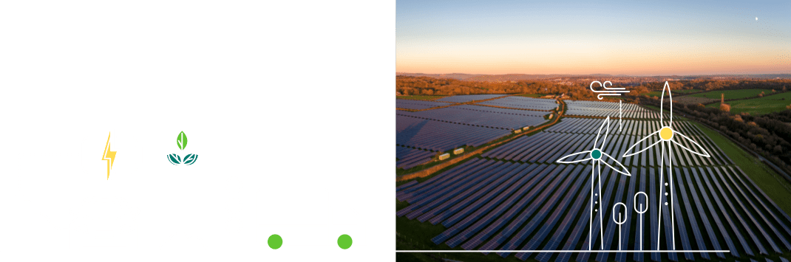

Goals to curb carbon emissions and increased scrutiny of how companies treat all stakeholders have quickly shifted the investing universe’s appetite for ESG.
Evidence so far suggests that this has had meaningful implications for returns. Morningstar Financial Research2 examined the performance of their ESG indices and found that 75% outperformed their broad market equivalents in 2020.
2Source: Morningstar Financial Research, Feb 2021. 69 unique Morningstar indexes were examined, mostly equity-focused but also including a corporate bond benchmark.

This outcome is not surprising. Sustainable investing takes investing further than just risk and return by adding a third dimension – impact risk.
Understanding the impact companies have on society and the planet is crucial in determining their true costs. This is because negative activities are risks that can translate into a financial cost to a company.
Only by considering these three pillars together can investors uncover a company’s real investment potential.